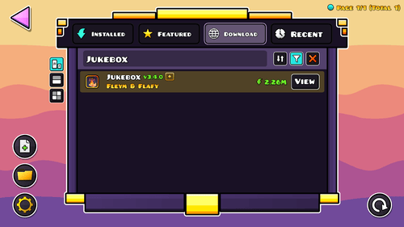
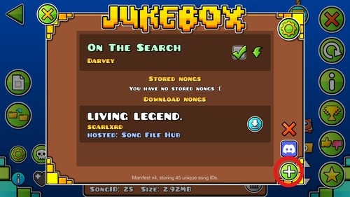

一、新增挑戰：
-
創作者為臉書社團「幾何衝刺台灣遊玩討論區」(下簡稱社團) 之社員。
- 如為合作關卡，則主要創作者須為社團之社員。
- 驗證人須以符合玩家規範 (第三條) 之方式驗證該挑戰。
- 挑戰須可在原版 (2.2, Vanilla) 遊戲通關。
- 不允許在關卡內放置輕點 (Swift Click，在一幀內做出點擊與放開的操作)。
- 不允許Minigame類型的挑戰。
- 不允許放置會使遊戲崩潰之配置。
- 不允許在關卡內放置仇恨言論或符號。
- 隱藏角色或Gameplay僅允許做特效使用。
- 如挑戰內有隨機元素 (含偽隨機) 或Persistent Item，其不應明顯影響難度，即每一Attempt的難度必須大致相同且皆能通關。
-
欲新增之Classical挑戰須符合以下條件：
- 對於所有路線，通關該挑戰之所需時長低於30秒
- 對於任連續3個點擊之平均CPS不得超過10
-
欲新增之Platformer挑戰須符合以下條件：
- 通關該挑戰之預估時長 (在關卡目錄顯示之遊玩時間) 低於60秒
- 對於任連續3個點擊之平均CPS不得超過10
- 關卡內無紀錄點，但在關卡開頭轉場後放置一個紀錄點可被允許
-
欲新增之Spam挑戰須符合以下條件：
- CPS需大於10
- 挑戰應以spam為主，但可在開頭或結尾放置非spam的玩法
- 不允許考驗點擊規律 (consistency) 之挑戰
- 對於所有路線，通關該挑戰之所需時長低於30秒
-
修改 / 擷取 / 延長他人的關卡，皆須經過原創作者的同意。
- 原創作者保有撤銷同意的權利。
- 若該挑戰修改自其他已在榜上之挑戰，且通過之給予欲遊玩新挑戰的玩家明顯優勢，則僅會將較難的挑戰保留於榜上。此項規定不適用於Spam挑戰。
-
創作者可要求通關人以指定FPS區間遊玩，但須證明其可用該FPS區間通關。
- 若已發布，且該挑戰限制下述FPS任一：60, 144, 240, 288, 300, 360，則須重新驗證。
- 如違反上述條件，且事態嚴重或屢次違反，該玩家將永久禁止新增關卡。
- 若在關卡發布後，發現到未被修正的secret way，創作者得在不影響原路線難度的情況下封路，且無需重新驗證。
二、上傳成績：
- 只有社團之社員才能登錄成績。
-
有二種途徑可以提交紀錄至榜上：
- 在社團發布貼文 / 連結
- 填寫表單
-
欲登錄紀錄者，需附上完整通關影片與點擊聲。
-
對於Classical及Spam挑戰：
- 須包含自前次嘗試之死亡、角色重生至完全彈出通關視窗之錄影。
- 若玩家於首次嘗試即通關，則需包含進入關卡之片段。
-
對於Platformer挑戰：
- 須包含所有記錄點之通過片段。
- 每個片段須包含前次嘗試之死亡至碰觸下個紀錄點或完全彈出通關視窗之過程。
- 若玩家於首次嘗試即通關，則需包含進入關卡或紀錄點之片段。
- 提供原始 (未剪輯) 錄影檔非強制性要求
- 不允許使用Click Sounds模組來提供點擊聲
-
對於Classical及Spam挑戰：
-
證明影片需滿足以下條件：
- 遊玩畫面清晰可見，且無裁切或遮擋螢幕
-
上傳於可被社團內所有人檢視之網站，包含但不限於：
- 本社社團
- YouTube
- BiliBili
- Twitch (限精華)
- 不接受上傳至色情網站之影片
-
若該挑戰有FPS限制，須在螢幕上顯示FPS
- iOS玩家不在此限
三、玩家規範：
-
以下行為在本榜被禁止：
-
使用外掛及模組來進行利於通關的行為，包含但不限於：
- NoClip - 傷害無視
- Speedhack - 調整速度
- Show Hitboxes - 顯示碰撞箱
- Hitbox Multiplier - 縮放碰撞箱
- Bot - 使用預錄點擊遊玩
- 自行調整關卡難度，如刪刺 / 移動障礙物等
- 盜用他人影片
- 在Classical關卡或Platformer關卡內任一紀錄點中以拼接影片之形式證明
-
多人共用同一社團帳號，或一人使用多個社團帳號來登錄成績
- 此情形包含代替該玩家通關
- 在Spam挑戰中使用手指以外之工具或方式遊玩，或使用多於四根手指進行點擊
- 在Platformer挑戰傳送至或起始於某存檔點
-
使用Smooth Fix功能來刻意減緩關卡速度
- 若無大幅影響關卡速度則仍可使用
- 使用會影響紀錄審查之模組 (如Click Sounds) 或剪輯手法 (如大幅遮擋畫面)
- 使用明顯非設計之路線 (Secret Way) 通關
- 遊玩該關之舊版本
- 違反上述 i. ~ vii. 任一項且欺瞞其行為者，將會被永久禁止登錄成績並將其先前所登錄之成績刪除
-
使用外掛及模組來進行利於通關的行為，包含但不限於：
-
以下行為在本榜被允許：
-
使用以下外掛或模組：
- Click Between Frames
-
FPS/TPS Bypass
- 限使用60 ~ 360之間
- 0% Practice Complete
- Show Hitboxes on Death
- Deathlink
- 在練習模式下自起點無傷通關
-
使用以下外掛或模組：
-
若玩家通關於關卡之複本，須遵守以下規定：
- 不可自行調整關卡難度，如刪刺 / 移動障礙物等。
- 如為自製LDM，其不應大幅影響難度，如刪除遮擋玩家之裝飾。
- 若不確定該複本之有效性，可事先與管理員確認後，方可使用。
- 若為2-Player挑戰，亦須為單人通關
- 紀錄須在遊戲目前版本或該關卡驗證時之版本通關。
四、關卡意見回饋：
- 玩家在通過挑戰後，可向管理員提供該關之意見回饋，以供難度排名與細項使用 (非強制) 。
-
對於所有挑戰，通關者可提供以下意見：
- 排名 - 該挑戰在榜上的名次，可為一數值或區間
-
可玩度 - 該挑戰之好玩程度，介於0 ~ 10之間
- 注意5分代表「無特別好玩或特別不好玩」
-
對於Classical挑戰，通關者可提供以下意見：
- 此部分評分皆介於0 ~ 5之間，其中0分代表該面向難度低於Extreme Demon，5分代表該面向難度達到官方Challenge List。
- Timing - 對於點擊時機精準度具要求之Gameplay
- Ship - 對於Ship操控技巧具要求之Gameplay
- Wave - 對於Wave操控技巧具要求之Gameplay
- Swing - 對於Swing操控技巧具要求之Gameplay
- CPS - 對於點擊速度具要求之Gameplay
- Learny - 該挑戰好不好學
-
對於Platformer挑戰，通關者可提供以下意見：
- 此部分評分皆介於0 ~ 5之間，其中0分代表該面向難度低於Extreme Demon，5分代表該面向難度達到官方Platformer List。
- Precision - 對於定位精準度具要求之Gameplay
- Ship - 對於Ship操控技巧具要求之Gameplay
- Speed - 對於時間控制具要求之Gameplay
- Learny - 該挑戰好不好學
-
對於除排名外之各項分數，會依所有提供意見之通關人以加權平均計算，加權方式如下：
- 所有通關人之預設權重皆為1
- 若其為驗證人，其權重乘以0.75
- 若其於榜上之紀錄數量 (含Legacy挑戰) 低於3，其權重乘以0.5
- 若其於榜上之紀錄數量 (含Legacy挑戰) 高於10，其權重乘以1.2
五、紀錄形式：
-
關卡榜排序規則：
- Classical與Platformer挑戰會列出前30名，Spam挑戰會列出前10名
- 排序依據主要由通關者提供意見回饋。
-
通過一挑戰會給予玩家相對應之積分，由該關之排名及列表總關卡數決定。積分算法設計標準為：
- 通過列表最難關卡會給予200分
- 通過列表最簡單關卡會給予10分
- 通過Legacy挑戰不給予分數
$$分數=\frac{75.9783}{1.02^{N-50}}-0.4896，其中N=\frac{150-1}{總關卡數-1}\times(挑戰排名-1)+1$$或可參考此圖表。 -
通過一挑戰之玩家會列於該關清單內。若有二名以上玩家通過同一挑戰，會依下列標準作排序：
-
證明影片上傳時間
- 如為Platformer榜，則以通關時長做比較
- 玩家名稱之字母排序
-
證明影片上傳時間
- 若該玩家為驗證者，其顏色會標註藍色
- 若使用手機通關之玩家，在記錄旁會註記
-
玩家排名依下列標準作排序 :
- 獲得之分數總分
- 通關之最難挑戰排名
- 通關之挑戰數量
- 驗證之最難挑戰排名
-
通關最難挑戰之證明影片上傳時間
- 如為Platformer榜，則以通關時長做比較
- 玩家名稱之字母排序
- 玩家所過之挑戰會依據難度由上而下排序：
- 若該玩家為該挑戰之驗證者，其顏色會標註藍色
- 若使用手機通關之玩家，在記錄旁會註記
六、審核與通知：
- 提交紀錄之審核時長約落於一至三日內，新增挑戰之審核時長通常會花更久。
- 若該玩家並未列於榜中，管理員會於社團內之榜單公告貼文下標註該玩家通知其上榜。
-
若提交的紀錄有違規之疑慮，管理員會通知該玩家並請求其提供更詳細的證明，如：
- 原始 (未剪輯) 錄影檔
- 更清晰的錄影檔
七、紀錄移除：
-
一紀錄之移除可能為下列原因所導致：
- 該挑戰被移至Legacy List或違反新增挑戰 (第一條)
- 玩家違反規定三.1、三.3、三.4，或三.5
- 玩家經規定八.2請求移除
- 證明影片連結因故無法被社團內所有人檢視
- 該關卡經更新後難度顯著提升
- 社員退社不會使其紀錄被刪除。
-
被移除後之關卡會移至Legacy List作保存，且該關不會再接受新的紀錄。
- 原紀錄持有者仍會顯示於該關內列表。
- 若該關難度被升至Extreme Demon，且持續至少5天後，其會重返回關卡榜上。
八、玩家資料修改：
-
玩家上榜後，可向管理員請求對下列資料進行新增、修改或移除：
- 玩家名稱 (必留)
-
玩家連結
- 此包含GD、YouTube以及社團帳號。
- 亦可更改GD帳號顯示之icon。
- 證明影片連結 (必留)
- 各項意見回饋
-
玩家亦可提出刪除部分或全部紀錄之請求。
- 此行為不會對該玩家未來重新提交紀錄造成影響。
九、其它：
- 本網站之規定以不溯及既往為原則，並套用至未來增訂之規則。
- 此規則僅適用於本網站，不影響社團內之運作。
- 如有任何問題，歡迎在社團訊問或私訊管理員。
附錄A：更換歌曲教學
有一些挑戰使用了不在Newgrounds或是Music Library的歌 (簡稱 NONG )，而使用這些歌需要藉由模組協助或是直接替換檔案的方式來達成。 這個附錄會教你如何在遊戲中使用NONG。
-
電腦玩家 (Windows / Mac)
-
使用模組「Jukebox」：
- 若尚未安裝Geode，請先至該網頁安裝。
- 在Geode目錄內，搜尋「Jukebox」 
- 在關卡目錄中，點擊歌曲欄位左上角的唱片按鈕。接著，點擊右下角的新增歌曲 
- 選擇你要使用的歌曲匯入即可
-
替換檔案：
-
開啟遊戲儲存音樂的資料夾
- Windows - %LocalAppData%/GeometryDash
- Mac - ~/library/Caches
- 將要使用的歌曲名稱改為欲替換的歌曲ID，取代後即可
-
開啟遊戲儲存音樂的資料夾
-
使用模組「Jukebox」：
-
手機玩家 (Android)
- 使用模組「Jukebox」：
- 步驟與電腦相同。